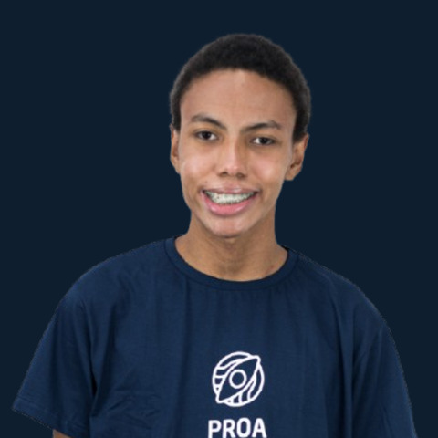

Sobre mim
Bom dia, boa tarde ou boa noite!
Meu nome é Rodrigo, sou um jovem desenvolvedor entusiasmado com tecnologia e vou contar um pouco sobre o meu começo na programação.
Meu primeiro projeto foi um tanto inusitado, pois surgiu da ideia de criar um programa com IA capaz de ler captchas e resolvê-los automaticamente. Obviamente, não consegui fazer o programa funcionar, já que existem empresas inteiras trabalhando justamente para evitar que isso aconteça — e eu ainda não tenho conhecimento suficiente para burlar esses sistemas. No entanto, os vídeos no YouTube deram um impulso ao meu interesse nessa área e mudaram a minha visão sobre tecnologia: ela deixou de ser apenas um hobby e passou a ser uma possível carreira profissional.
Baixar o meu CVMapa de Carreira
Desenvolvedor Júnior
Quero desenvolver as melhores práticas e ganhar experiência.
Soft Skills exigidas para essa carreira:
- Resolução de problemas.
- Aprendizagem rápida.
- Ter consciência dos seus limites.
- Saber se expressar.
- Honestidade.
Roadmap de Aprendizado:
- Kotlin
- Python
- jQuery
- JavaScript
- HTML/SASS
- PostgresSQL
- MongoDB
Desenvolvedor Pleno
Com mais expêriencia, poderei me consolidar no mercado e ter mais reposabilidades.
Soft Skills exigidas para essa carreira:
- Resolução de problemas.
- Aprendizagem rápida.
- Ter consciência dos seus limites.
- Saber se expressar.
- Honestidade.
Roadmap de Aprendizado:
- Swift
- Flutter
- Firebase
- Adobe XD
- SQLite
- Testes unitários
Desenvolvedor Sênior
Quero me consolidar minhas habilidade e experiencia no mercado de trabalho.
Soft Skills exigidas para essa carreira:
- Resolução de problemas.
- Aprendizagem rápida.
- Ter consciência dos seus limites.
- Gestão de Projetos
- Saber se expressar.
- Honestidade.
Roadmap de Aprendizado:
- Swift Avançado
- Kotlin Avançado
- Flutter/React Native Avançado
- CI/CD
- Padrões de Design
Engenheiro de Software
Quero dominar todos os aspectos do código e fazer aplicações escalonáveis.
Soft Skills exigidas para essa carreira:
- Resolução de problemas avançada
- Aprendizagem rápida e adaptabilidade
- Ter consciência dos seus limites
- Saber se expressar
- Honestidade
- Colaboração Interdisciplinar
Roadmap de Aprendizado:
- Ruby on Rails
- jQuery
- HTML/LESS
- MongoDB